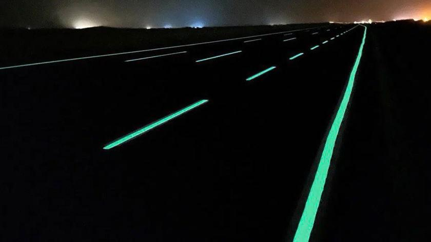
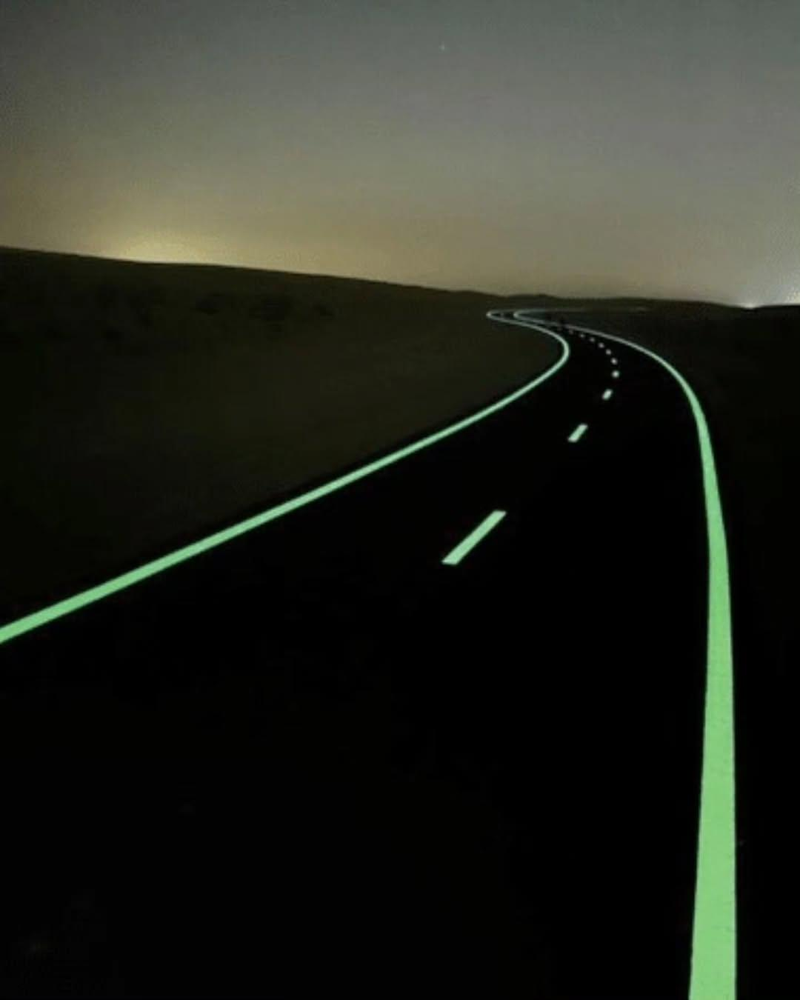

Roads & curves
Route edges, curves, roundabouts and approach zones where nighttime definition matters.
Zimbabwe's photoluminescent road-marking partner
LumiBright Zimbabwe brings light-responsive marking systems to the routes, paths and high-risk spaces that need clearer nighttime guidance.
During the day, the photoluminescent surface captures light. At night, it emits a visible glow that helps define the route - without wiring, poles or a connection to the grid.
Daylight
Absorption
Night glow
A practical layer of visibility
For stretches where conventional lighting is difficult, costly or unavailable, a glowing marking can make the edge, direction and route easier to read.

We start with the precise moments where visibility makes the greatest difference: a curve, a crossing, a path edge or a change in route.
Designed around the site, not a generic lighting plan.
Suitable use cases are assessed for local substrate, traffic, marking geometry and operating conditions.
Route edges, curves, roundabouts and approach zones where nighttime definition matters.
Industrial routes, loading zones, yards, docks and pedestrian interfaces.
Footpaths, cycle paths, stairs, crosswalk approaches and public-realm connections.
Rest areas, campuses, hospitality precincts and wayfinding where a memorable arrival matters.
The recommended starting point is a focused 200–500 m demonstration on a route where visibility is a real operational question.
Discuss a pilotUnderstand the route, its users, surface and local lighting conditions.
Set the relevant marking plan and prepare a clean, dry surface.
Apply the selected system with attention to durability, visibility and slip resistance.
Review the completed route and establish the next phase with the project team.
Supplier guidance specifies a clean, dry asphalt or concrete substrate, a substantial white undercoat and a photoluminescent top layer.
Supplier-cited systems can be specified with added aggregate where higher slip resistance is required.
Expected glow and service life vary with sunlight, traffic, geometry, weather, wear and maintenance conditions.
No. The marking is designed to absorb light during the day and emit it after dark, without an electrical connection in the marking itself.
The source material cites glow for up to 10 hours. Actual duration and perceived brightness depend on charge, colour, weather, viewing conditions and site configuration.
Yes. Potential applications include paths, crossings, industrial walkways, logistics yards, docks, safety zones and selected destination sites.
Start with a site assessment. It lets the project team define the route, surface preparation, marking layout and practical performance expectations.
LumiBright Zimbabwe
Tell us where visibility needs to work harder. We will use the details to scope a site assessment or pilot discussion.
Start an enquiry For roads, industrial sites, logistics routes and public-realm projects.